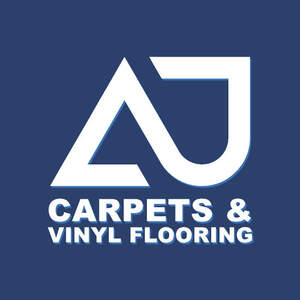
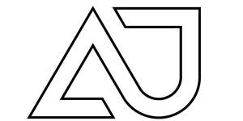

Trade Mark Journal No.2025/029 18 July 2025
UK00004231395 9 July 2025 (27,35,37,42)
Mark 1

Mark 2

Mark 3
Registration of this mark shall give no right to the exclusive use of the words 'CARPETS AND VINYL FLOORING'
- Class 27
- Carpets; Carpets, rugs and mats; Carpets [textile]; Underlay for carpets; Carpets for automobiles; Carpeting; Vehicles mats and carpets; Vehicle mats and carpets; Tiles (Carpet -); Carpet tiles; Carpet tiles made of textiles; Rugs; Carpet underlays; Underlays for carpeting; Carpet tiles for covering floors; Carpet underlay; Rugs [mats]; Bathroom tiles [carpet]; Carpet inlays; Rugs (Floor -); Carpet tiles made of plastics; Hand made woollen carpets; Fur rugs; Carpet runners; Floor tiles made of carpet; Underlays for rugs; Bathroom rugs; Rugs (Door -); Rugs for animals.
- Class 35
- Shop retail services connected with carpets; Online retail store services relating to clothing; Retail services in relation to furniture.
- Class 37
- Fitting of carpets; Refurbishment of buildings; Interior refurbishment of buildings; Services for the redecoration of buildings; Advisory services relating to building refurbishment; Interior renovation of commercial premises; Maintenance and repair of flooring; Interior fitting-out of company premises; Maintenance and repair of office buildings; Interior fitting-out of offices; Laying of carpet.
- Class 42
- Interior design; Interior decorating design; Interior design services; Design services relating to interior decorating for homes; Furnishing design services for the interiors of buildings; Consultancy services relating to interior design; Design of building interiors.
AJ Carpets Ltd